Portfolio
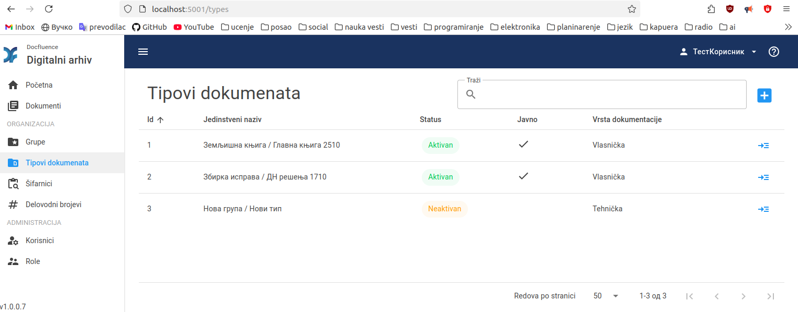
Digitalni arhiv (Digital archive)
- .NET, C#, Blazor, MudBlazor, UI/UX, data visualization
I was invited to improve the user interface of the Digital Archive, unify the design, simplify its use for non-technical users and implement new functionalities, such as Dashboard and drag and drop upload.
Check it out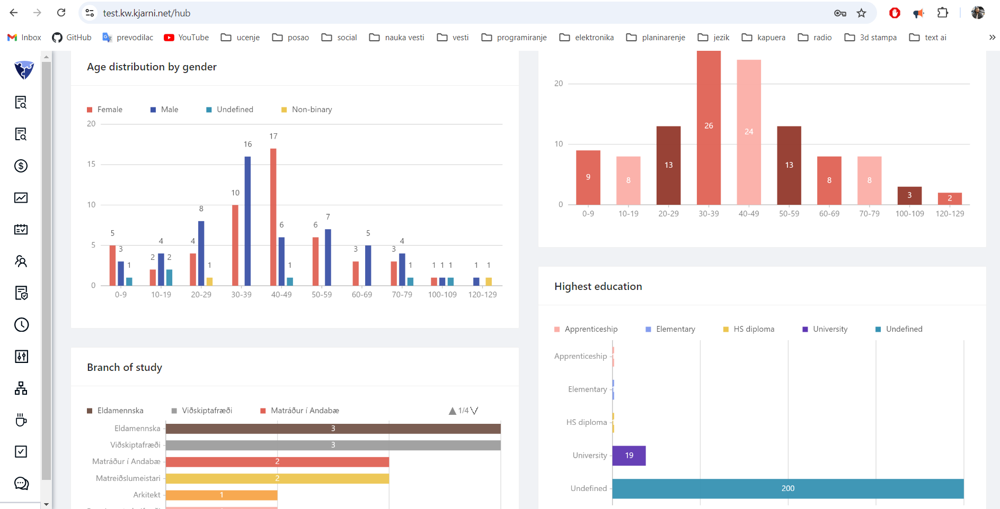
Kjarni (ERP solution)
- React, Ant Design, data visualization
I developed custom ERP and HR software solutions for internal company use, as well as other applications for various clients.
Not available to the public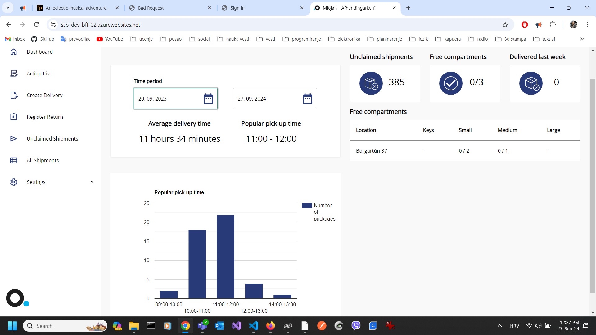
Miðjan (shipping software)
- React, Ant Design, .NET, C#, data visualization, unit tests, test automation
I developed Miðjan shipping software for sending and tracking packages, used in Iceland.
Not available to the public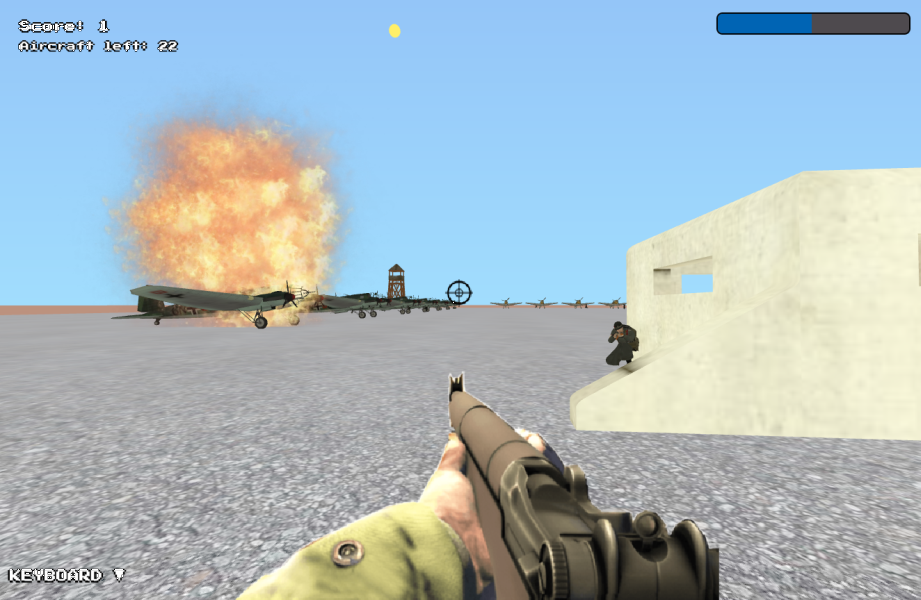
First Person Shooter
- Three.js, 3D Game Development
I developed this game as part of my long-time hobby.
Check it out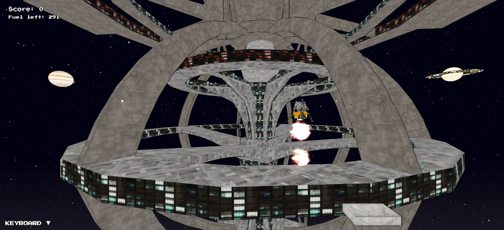
Moon Landing
- Three.js, 3D Game Development
I developed this game as part of my long-time hobby.
Check it out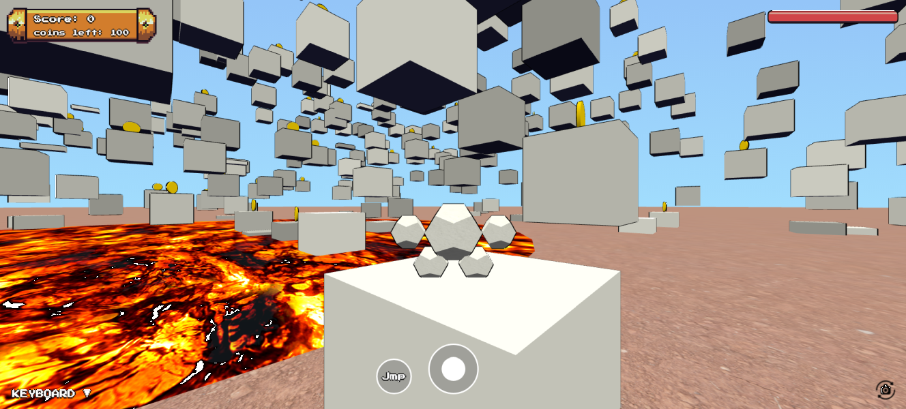
3D Platform Game
- Three.js, 3D Game Development
I developed this game as part of my long-time hobby.
Check it out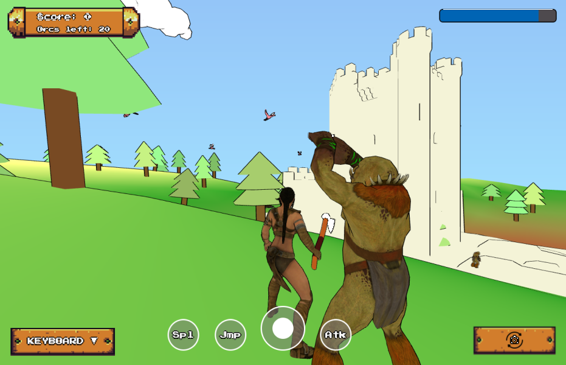
RPG Fantasy Game
- Three.js, 3D Game Development
I developed this game as part of my long-time hobby.
Check it out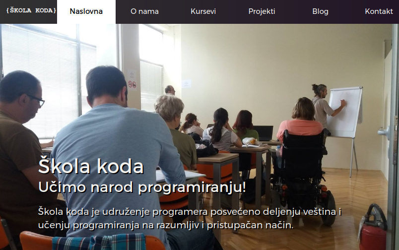
Škola koda (School of Code)
- Mentoring, Team Lead, Javascript, React, Angular, PHP, Python, Arduino...
I am the founder of School of Code in Belgrade, where we offer specialized training for individuals and companies. I also developed a custom interactive solution for learning programming and executing code in the browser.
Check it out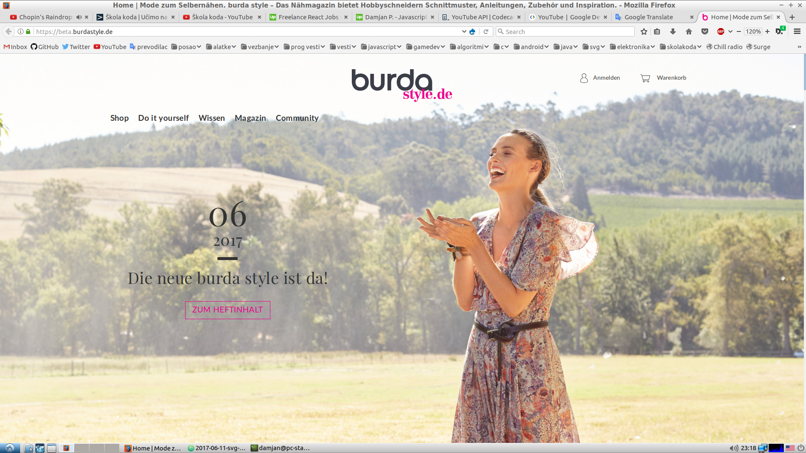
Burda Style
- Team Lead, JavaScript, ES6, Sass, Drupal, Twig, PHP
Our client, the famous German fashion house Burda, wanted a new modern, responsive, pixel-perfect, and beautiful website.
I led the Front-end team on the project. It was a great experience working with some of the world's best designers.
Check it out
Programming Quotes
- React, Node.js, MongoDB, RESTful API
Programming Quotes is an open-source app and database. It is my largest open-source project.
Check it out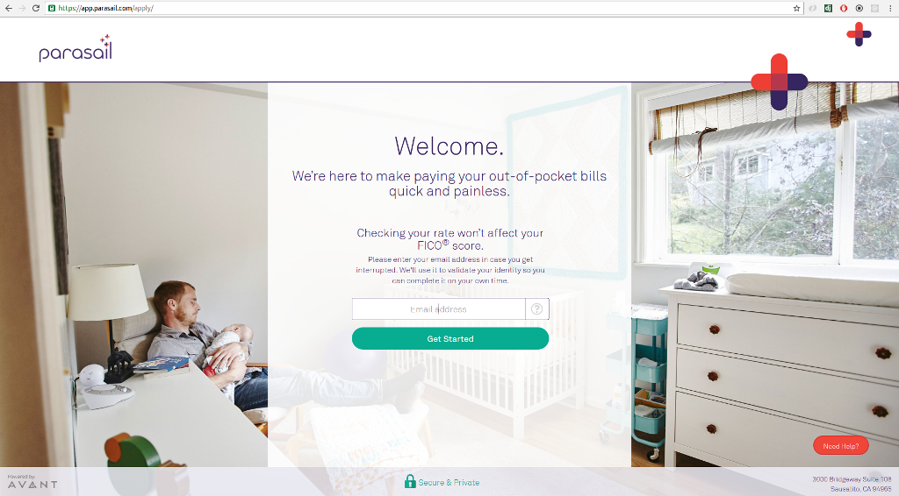
Parasail Health
- React.js, Redux, TypeScript, Webpack
The client wanted a React.js application for patients to apply for health loans. I worked on this project as an employee of Itekako Inc.
Check it out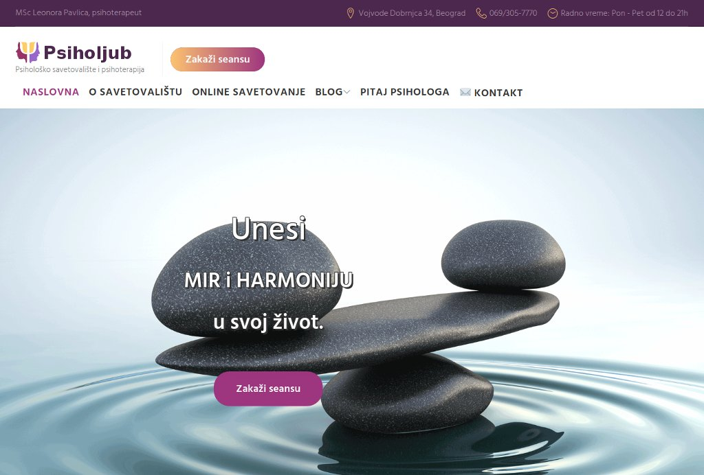
Psiholjub
- WordPress, CSS, Responsive Design
I built a child theme in WordPress using CSS and JavaScript, deployed files to a server, and optimized page loading speed.
Check it out
Monuments App
- Google Maps API, ES6
A map of Yugoslav WWII monuments. One of the applications from my programming workshops in Belgrade.
Check it out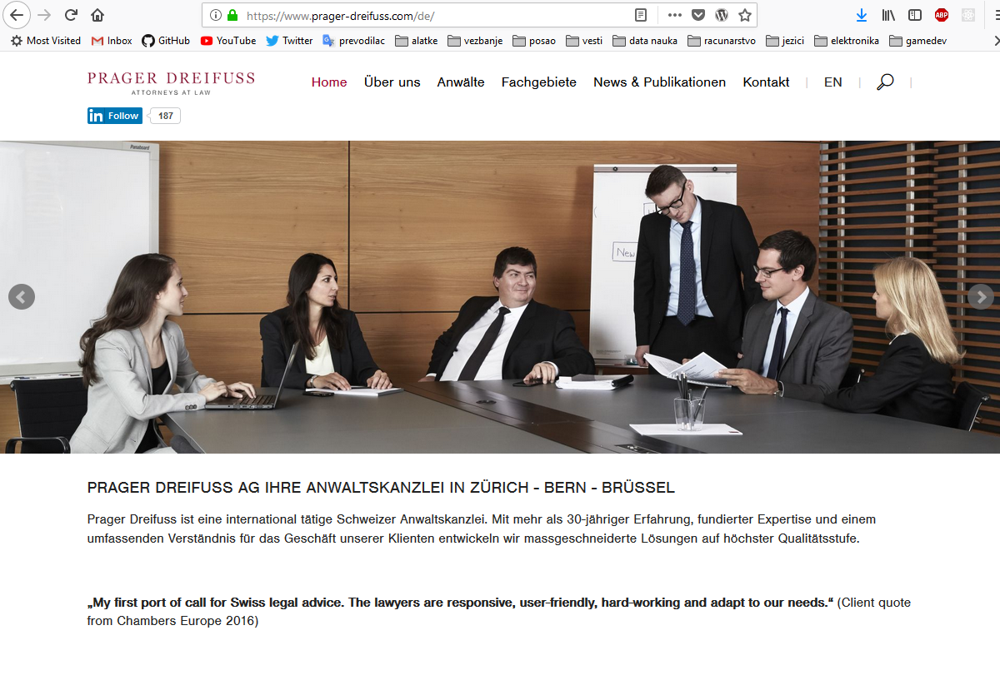
Prager Dreifuss
- AngularJS, WordPress, Responsive Design
I worked on this project as an employee of Spoiled Milk. I built front-end pages in WordPress using HTML5 and JS. The client requested advanced real-time search functionality, which I implemented using AngularJS.
Check it out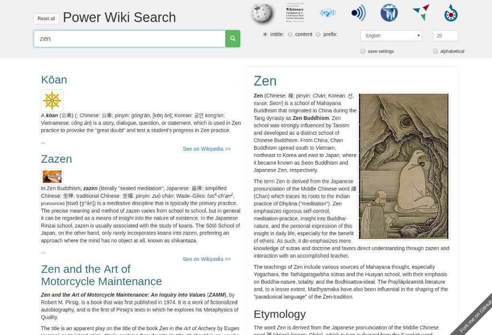
Power Wiki Search
- Wikipedia API, Angular, search engine
Search engine for Wikipedia and related Wikimedia projects.
Check it out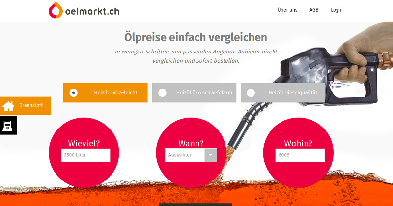
Ölmarkt
- jquery-mobile, jquery, bootstrap, javascript, twig, php, Symfony
Our client wanted to build an oil ordering platform. I built a responsive web app, while my colleague developed the back-end using the Symfony Framework.
Check it out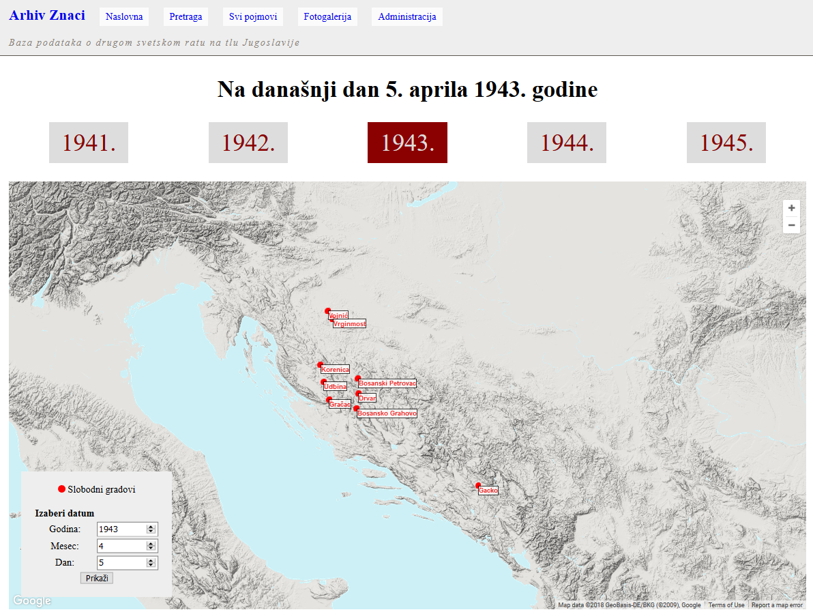
Historical Archive Znaci
- database design, php, javascript, css, mysql, ajax, sql, google maps api 3
I designed the database, core engine, and UI for the largest historical web archive on WW2 in Yugoslavia. I developed both the back-end and front-end for the new Znaci web application.
Check it out
Small Tanks Game
- game, game-2d, javascript, browser game
Simple game with two tanks, created in HTML5 canvas. You can play against the computer or another player.
Check it out
Painting App
- HTML5, canvas, Javascript
Simple JavaScript application for drawing in HTML5 canvas.
Check it out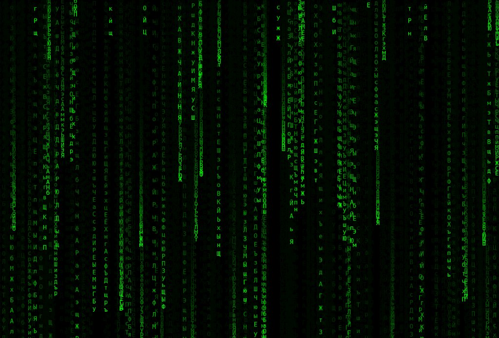
Matrix Animation
- HTML5, canvas, Javascript
Matrix raining code animation with the Cyrillic alphabet.
Check it out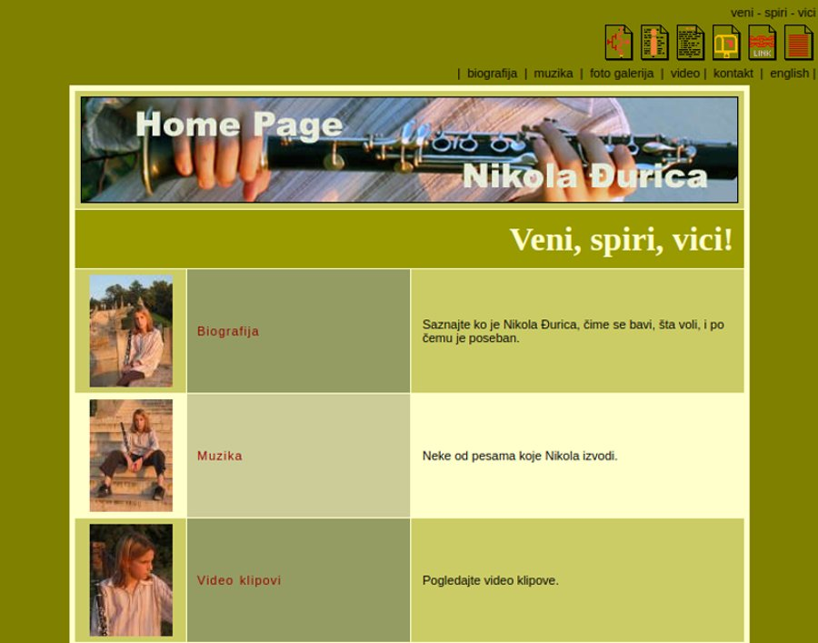
Nikola Djurica Presentation
- HTML4, CSS2
One of my first customer projects from 2005. A web presentation for Serbian clarinetist Nikola Djurica. It was also my first work with CSS.
Check it out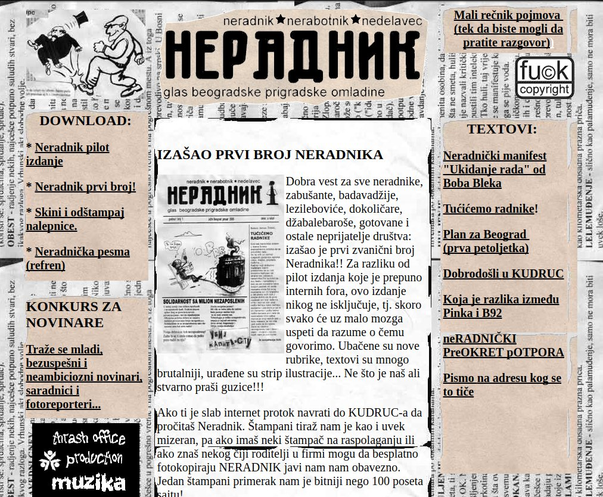
Neradnik Fanzine
- HTML4, Dreamweaver, iframe
One of my early websites, the youth magazine Neradnik from 2004.
Check it out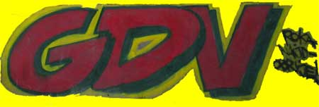
Grupa dobre volje (2004)
- HTML, GeoCities
One of my early websites from 2004, built for Grupa dobre volje, a Belgrade collective of artists, activists, and musicians.
Check it out